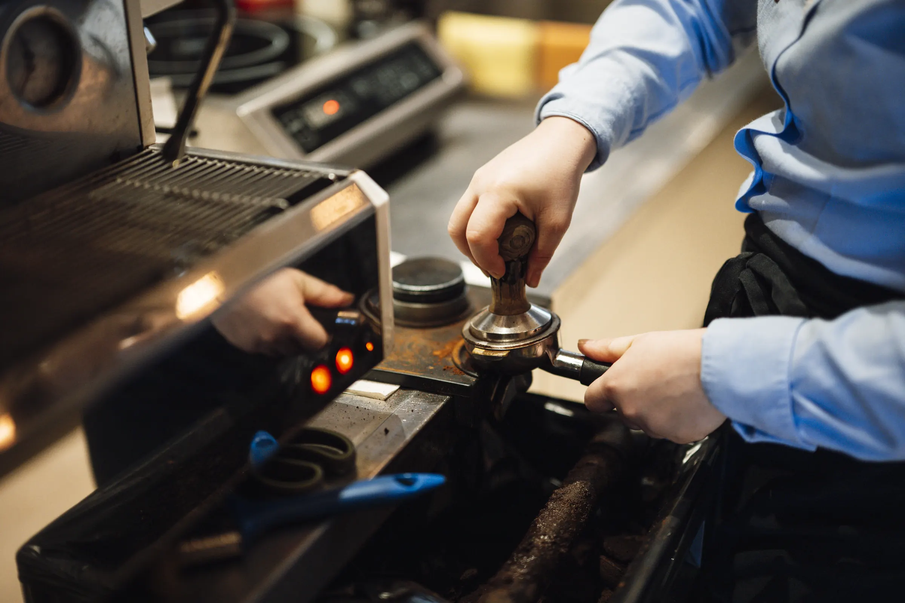

Café mit Rösterei in Leipzig-Plagwitz
Espresso und Filterkaffee aus eigener Röstung, Dienstag bis Sonntag ab 8 Uhr.
Karte und Bohnen
Espresso-Bar
- Espresso2,40 €
- Cortado3,10 €
- Cappuccino3,60 €
- Flat White3,90 €
Filter und Bohnen
- Filterkaffee3,20 €
- Filter, große Tasse4,10 €
- Bohnen, 250 g9,80 €
- Bohnen, 1 kg34,50 €

Öffnungszeiten
- Dienstag bis Freitag
- 8 bis 18 Uhr
- Samstag, Sonntag
- 9 bis 17 Uhr
- Montag
- geschlossen
Bohnen zum Mitnehmen
Wir mahlen auf Wunsch für Siebträger, Filter oder Kanne. Geröstet wird jeden Dienstag.